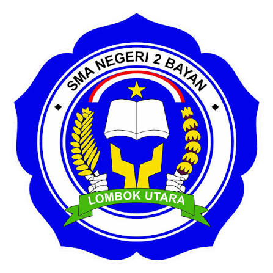

Dusun Ancak, Desa Karang Bajo, Kec. Bayan
Temukan komunitas terbaikmu di SMAN 2 Bayan. Pelajari profil, jadwal latihan, struktur kepengurusan, hingga hubungi langsung ketua ekskul untuk pendaftaran anggota baru.
Slogan ekskul